Sublime Text 3 实战开始
1、就近选择相同项:ctrl+d
把光标放在一个单词上，按下ctrl+d，将选择这个单词。一直按住ctrl且按D多次，将选择当前选中项的下一个匹配项。通过按住ctrl，再按D三次，将选择三个相同的文本。
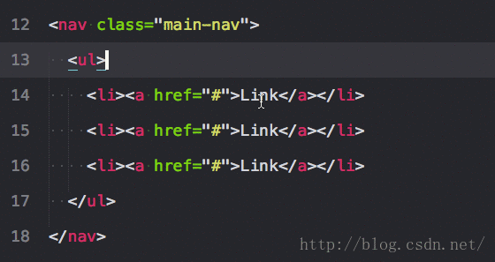
2. 选择当前文件所有匹配项: alt+f3
选择文件中的所有匹配项。小心使用这个，因为它能选择一个文件中的所有匹配项. .
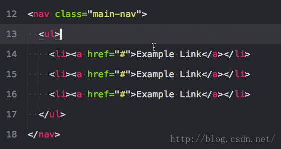
3. 选择文本的包裹标签: ctrl+shift+~
这是一个法宝。也许你希望所有属性保持不变，但只是想选择标签。这个快捷键为你这样做，会注意到你可以在一次操作多个标签。ps：需要Emmet插件（可以直接到后面看插件的安装）
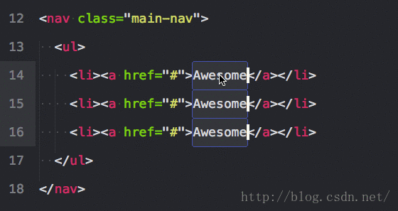
4. 向上扩展一层: ctrl+shift+a
选择文本，就像ctrl+d。但是再次按下它，将选择父容器，再按，将选择父容器的父容器。ps：需要Emmet插件（可以直接到后面看插件的安装）
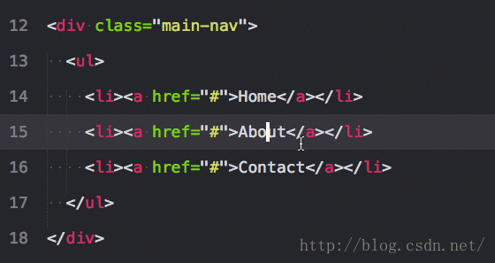
5. 选择括号内的内容: ctrl+shift+m
这有助于选择括号之间的一切。同样适用于CSS。
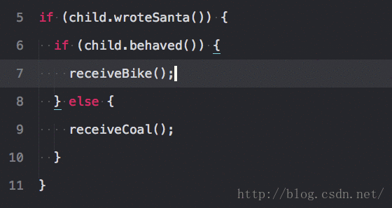
6. 整行上下移动: ctrl+shift+↑或 ctrl+shift+↓
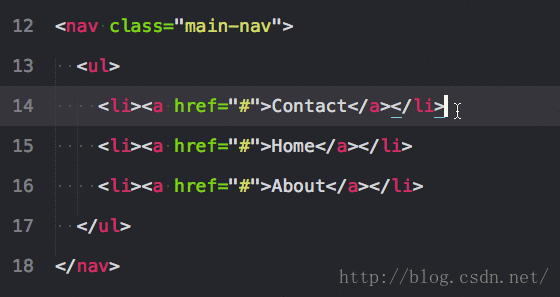
7. 复制行或选中项: ctrl+shift+d
如果你已经选中了文本，它会复制你的选中项。否则，把光标放在行上，会复制整行。
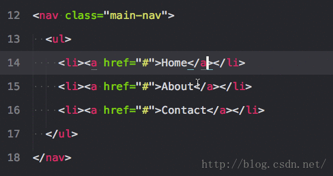
8. 增加和减少缩进: ctrl+[ 或 ]
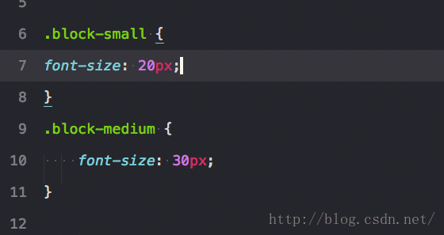
9. 单行剪辑或选中项: ctrl+x
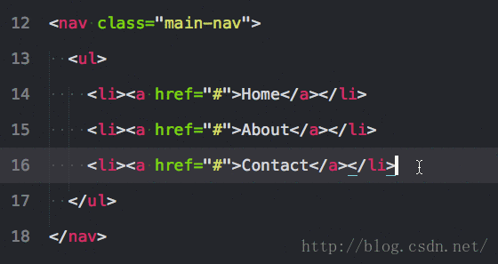
10. 粘贴并复制格式: ctrl+shift+v
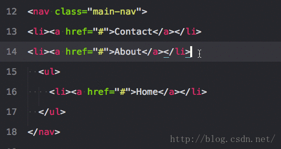
11. 用标签包裹行或选中项: alt+shift+w
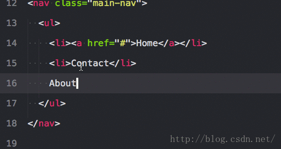
12. 移除未闭合的容器元素: ctrl+shift+;
这会移除与你的光标相关的父标签。对清除标记很有帮助。
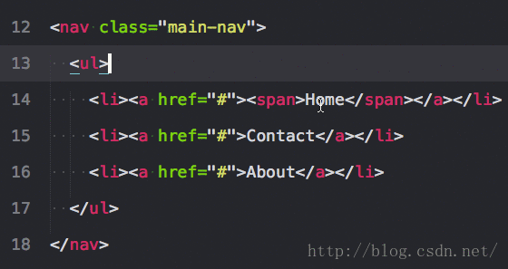
13. 大写和小写: 大写ctrl+k+u、小写ctrl+k+l
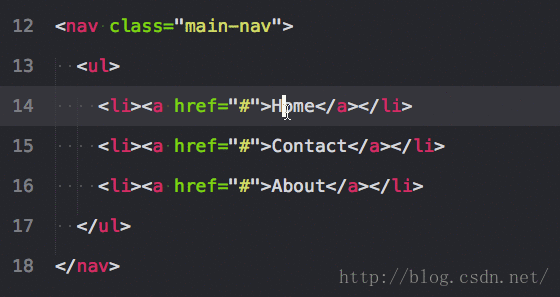
14. 注释选中项/行: ctrl+/
这个在所有语言下都可用， 对行和选中项都可用
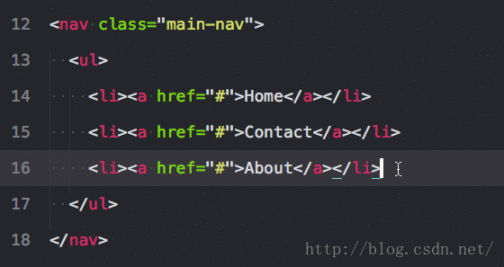
15. 删除一行: ctrl+shift+k
这个就不用图了